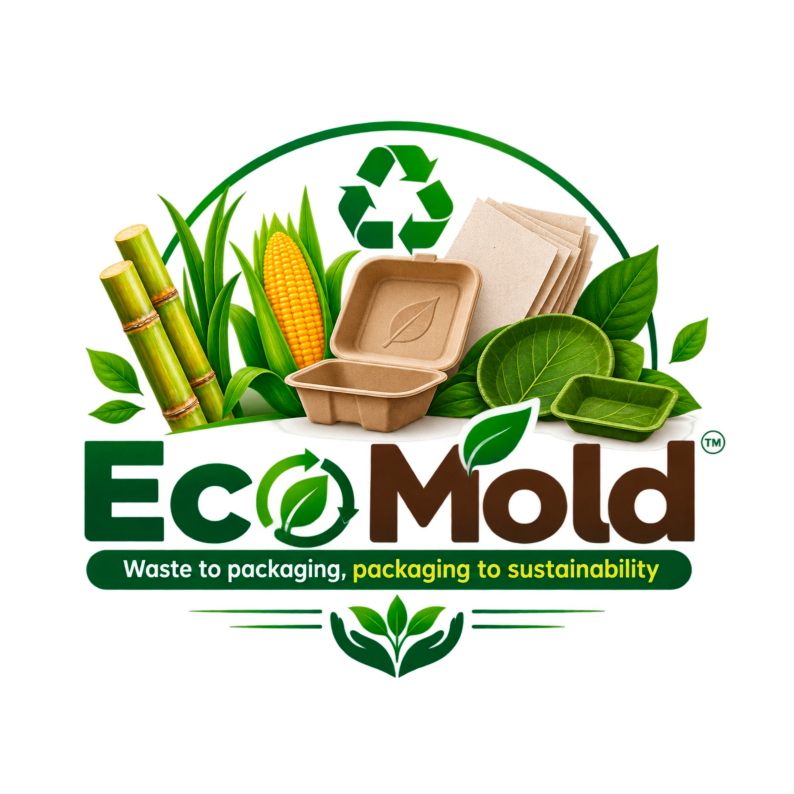

WEBSITE & BRANDING
Pratham Ratish Yadav
CONTRIBUTION
Logo Design • Website Development • UI Design • Digital Presentation

ENTREPRENEURSHIP DEVELOPMENT • SEM 3
An eco-friendly packaging concept developed by transforming natural and waste materials into sustainable packaging solutions.
EcoMold Packaging is a mini-project and business concept focused on developing environmentally friendly packaging using easily available natural and waste materials.
The concept explores how materials such as sugarcane waste, paper and leaves can be converted into useful packaging products, reducing dependence on conventional plastic-based packaging.
The project combines sustainability, creativity and practical engineering thinking to create a simple working model.

Conventional packaging contributes to long-lasting waste and environmental pollution.
Agricultural and paper waste can often be reused as raw material instead of being discarded.
There is a need for practical packaging alternatives that use renewable or recyclable materials.
Agricultural waste explored as a natural fibre source for sustainable packaging.
Paper material used as part of the packaging structure and material composition.
Natural leaves explored to add an eco-friendly component to the concept.
Explore how natural and waste materials can move through the EcoMold production concept.
Sugarcane waste, paper, leaves and other suitable eco-friendly raw materials are collected.
Collect suitable agricultural and recyclable materials such as sugarcane waste, paper and leaves.
Process and prepare the materials so they can be combined into a suitable packaging structure.
Shape the prepared material into the required packaging form using a mould.
Develop a functional eco-friendly packaging model suitable for further improvement and testing.
EcoMold explores how simple natural and waste materials can become the foundation for more sustainable packaging ideas.
THE PEOPLE BEHIND THE PROJECT
CONTRIBUTION
Logo Design • Website Development • UI Design • Digital Presentation
CONTRIBUTION
Project Research • Concept Planning • Documentation • Content Collection
CONTRIBUTION
Working Model • Material Preparation • Testing • Project Presentation
CONTRIBUTION
Google Form • Survey Setup • Data Collection • Response Organization